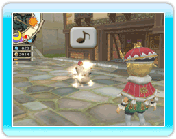

25
|
Moral |
 |
Vous remarquerez sans doute que les citoyens se mettent à faire des étincelles lorsque le roi prend le temps de leur parler.
Cela signifie qu'ils sont heureux. En rendant les citoyens heureux, vous remplissez la jauge de moral affichée en haut à gauche de l'écran. Il existe également d'autres moyens de faire grimper la jauge de moral, par exemple en réalisant les souhaits de vos sujets ou en leur permettant de trouver des objets spéciaux dans les boulangeries et les grands magasins. Une fois la jauge de moral remplie, vous obtenez des revenus supplémentaires, signalés dans la rubrique "morale bonus" (bonus de moral) du rapport financier quotidien. Une jauge de moral pleine crée aussi une sphère de moral que vous pouvez ensuite utiliser pour améliorer encore davantage le royaume. Le nombre de sphères de moral cumulables augmente avec le nombre de boulangeries et de grands magasins. |
● Utilisation des sphères de moral
・Diffusion du moral  Convoquez Chime lorsque vous disposez d'une sphère de moral prête à être utilisée, et répandez-la sur l'ensemble de vos citoyens. Parlez à vos sujets en ville pour accroître le bonheur de leur famille. En parlant aux aventuriers, vous augmenterez temporairement leurs statistiques. Convoquez Chime lorsque vous disposez d'une sphère de moral prête à être utilisée, et répandez-la sur l'ensemble de vos citoyens. Parlez à vos sujets en ville pour accroître le bonheur de leur famille. En parlant aux aventuriers, vous augmenterez temporairement leurs statistiques.・Développement du royaume  Vous pouvez utiliser les sphères de moral depuis le menu du château pour développer le royaume. Vous pouvez utiliser les sphères de moral depuis le menu du château pour développer le royaume.Vous augmenterez ainsi sa prospérité et pourrez passer davantage d'ordres. Vous connaîtrez également mieux les souhaits de vos sujets, et en les satisfaisant, vous ferez encore grimper leur moral. Il existe d'autres avantages au développement du royaume : ouvrez l'œil ! |
● Moral au beau fixe
Lorsque les aventuriers réussissent à terminer un donjon, le royaume voit son moral passer au beau fixe. Pendant ces périodes, toutes les actions du roi susceptibles d'améliorer le moral des citoyens sont bonifiées. Utilisez donc cet état d'euphorie pour accroître encore le moral général. |
 |
 |
 |